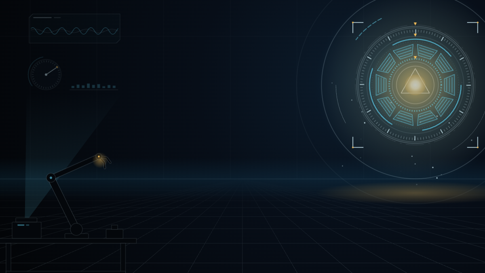

stark-lab
A spinning arc reactor while Claude works. It locks, flares gold and pings when it needs you.

Install
claude plugin marketplace add hamzafer/claude-code-mods
claude plugin install stark-lab@claude-code-modsRestart Claude Code after installing. To try it without installing, clone the repo and run claude --plugin-dir mods/stark-lab.
How to use
- Nothing to run. Start a local session in the Code tab of the Desktop app and send a message: the lab comes up behind the chat.
- To take the look off, turn the mod off, start a new session, then open Settings, search for
code appearanceand choose Remove colors.
How it behaves
- While Claude works, a dark workshop with a floor grid running to the horizon. At the right a holographic arc reactor turns, its four rings counter-rotating at different speeds and its core breathing. A scan line sweeps the floor, motes rise, a robot arm idles at the bench, and a waveform, a dial and level bars hang in a projector's light.
- When Claude needs you (its turn ended, it asks you a question, or a permission prompt is still waiting after 1.5 seconds), the rings spin down and lock with their notches lined up, the core flares gold-white and pulses, sparks pop, targeting brackets close in around the reactor and slow rings spread from it like a ping. The panels at the left dim and freeze.
- Every time is new: each lock starts from its own ring angles and throws its own sparks.
- There is no event for the moment you approve a permission prompt, so after you approve one the needs-you scene stays until that tool finishes. Background subagents and other plugins' tool calls never change it.
- Blue-black with a cyan hologram accent and one warm gold, dark mode only. The terminal draws no theme, so there it does nothing. Your system's reduced-motion setting stills the lab and hides the sparks, pings and motes.